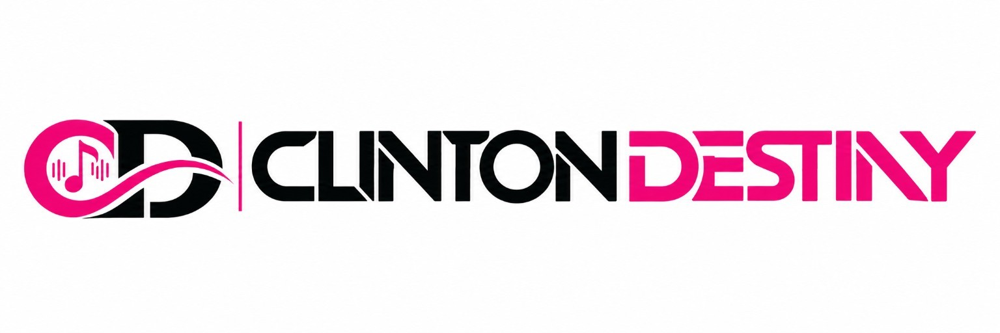

Prompt Engineering
Designing, refining and testing instructions for AI systems to produce useful results.

ARTIFICIAL INTELLIGENCE & TECHNOLOGY
Clinton Destiny explores artificial intelligence as a practical tool for creative work, education, communication and digital business.
His technology interests sit alongside his work as a musician, cultural artist and creative entrepreneur.
AI INTERESTS
Clinton Destiny studies and applies generative AI, prompt engineering, AI-assisted music, video and image creation, voice technology, automation and website development.
His approach focuses on practical use. AI tools are explored as part of creative production, digital communication, business development and training.
PRACTICAL APPLICATIONS
Designing, refining and testing instructions for AI systems to produce useful results.
Using AI-assisted workflows for music, video, images, voice and other digital content.
Exploring AI-supported processes that reduce repetitive work and connect digital tasks.
Using AI and digital tools in website development, e-commerce and business projects.
AI EDUCATION & COMMUNITY
Clinton Destiny has taught, tutored and mentored more than 1,000 people in artificial intelligence through practical AI education, training and community learning. He continues to build a community of more than 1,000 people learning AI together.
His training work covers AI foundations, prompt engineering, AI tools, creative production, digital business and practical automation. The goal is to help people use AI in real work, creative projects, business and everyday problem-solving.
EMPOWERMENT
Through AI training and mentorship, Clinton Destiny works to help creators, entrepreneurs, students and community members develop practical skills with emerging AI tools.
His work connects technology with creativity, business and community development, with an emphasis on helping people gain confidence and practical ability through guided learning.
CERTIFICATIONS & HONOURS
Certificate in the AI & Career Empowerment Program. The programme covered AI, leadership, talent development and business strategy. Certificate completion was documented on July 22, 2025.
Certificate from the programme led by Professor Mafor Edwan, examining ethical, societal and global risks associated with advanced AI. Clinton Destiny was recognised as Salutatorian at the completion and pinning ceremony.
Clinton Destiny completed AI Mastery Training Batch 1 and Batch 2 and launched Batch 3, continuing his work in practical AI education and community learning.
PROFESSIONAL DEVELOPMENT
AI & Career Empowerment Program.
Programme led by Professor Mafor Edwan. Clinton Destiny was recognised as Salutatorian.
PROJECTS
A fintech concept focused on multi-rail digital payments and financial tools for Cameroon, Africa and the diaspora.
An electronics-focused e-commerce project combining digital commerce, product management and technology infrastructure.
CREATIVE TECHNOLOGY
Clinton Destiny uses digital technology to support music, visual production, public communication, education and entrepreneurial projects.
His public technology profile is grounded in experimentation, learning and practical implementation across creative and business activities.
EXPLORE